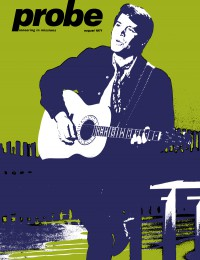

CMnexus
: Contemporary Christian culture, music, and media.
|
Glen CampbellOn the cover
August 1971
Probe | Media coverage- Aug 1971 in Probe "From Delight to Hollywood", by Duane Valentry
- Jul 1973 in Right On! "A Joyful Noise: Singles about Jesus by various artists: Doobie Brothers ("Jesus Is Just Alright" and cover versions); Kris Kristofferson, Glen Campbell, Tony Joe White, John Cameron Fogerty; trends in music charts; The Beautiful Zion Missionary Baptist Church Choir", by Paul Baker
- Feb 1986 in Fundamentalist Journal "Rock Music: Cadence of the Decade: In the Christian Rock Sound... Can You Hear God Whisper?", by Michael R. Smith
- May 1992 in Christian Herald "Glen Campbell", by Vicki T. de Vries
- May 1992 in Christian Herald "The Greatest Gift of All"
- Aug 1992 in Charisma & Christian Life "A Rhinestone Cowboy Returns To His Spiritual Roots", by Ana Gascón Ivey
- May 1997 in CCM "On The Beat: Flashback", by Derek Wesley Selby
- Apr 2012 in CCM Digital "Tour Spotlight: Ghost on the Canvas Tour, Rialto Square Theatre, Joliet, IL", by Andy Argyrakis
Albums & reviews:1970: Oh Happy Day
1973: I Knew Jesus (Before He Was a Star)
1983: Amazing Grace
1990: Walkin' in the Sun
1991: Unconditional Love
1993: Home for the Holidays
1993: Somebody Like That
1996: Jesus and Me: The Collection
1999: A Glen Campbell Christmas
2011: Ghost on the Canvas Award Summary (Nominations / Wins)
Dove Awards1992 Dove Awards1993 Dove Awards2000 Dove Awards Grammy Awards1999 Grammy Awards- Best Southern, Country, or Bluegrass Gospel Album: A Glen Campbell Christmas
Books about Glen Campbell
- "Glen Campbell" in The Encyclopedia of Contemporary Christian Music (Mark Allan Powell, 2002).
|
|